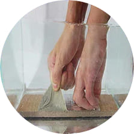
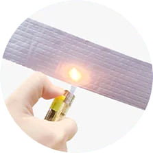
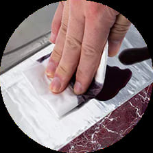

<section class="info__section">
    <div class="container">
        <div class="info__section-wrapper">
            <h2 class="info__title">
                LA CINTA PARA REPARAR TODO!
            </h2>
            <p class="info__text">
                Cinta funcional y versátil tan fuerte que puede sellar incluso un recipiente de agua, cuyo líquido burbujea como una fuente
            </p>
            <div class="info__item">
                
                <p class="info__item-text">
                    IMPERMEABLE
                </p>
            </div>
            <div class="info__item">
                
                <p class="info__item-text">
                    RESISTENTE AL FUEGO
                </p>
            </div>
            <div class="info__item">
                
                <p class="info__item-text">
                    resistente a la contaminación
                </p>
            </div>
        </div>
    </div>
</section>